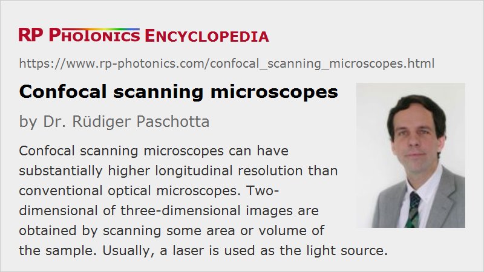

Confocal Scanning Microscopes
Acronym: CLSM = confocal laser scanning microscope
Definition: optical microscopes with enhanced depth resolution based on the confocal measurement principle
More general term: scanning microscopes
German: konfokale Mikroskope
Categories: vision, displays and imaging, optical metrology
How to cite the article; suggest additional literature
Author: Dr. Rüdiger Paschotta
Confocal microscopes are scanning microscopes, the primary feature of which is a substantially improved longitudinal (axial) resolution by suppressing image contributions from light outside a rather thin plane. This allows one to acquire three-dimensional images e.g. of transparent biological and medical samples – effectively applying a kind of “optical sectioning” instead of physical sectioning of samples. With such microscopes, one can even observe tiny details within living cells, for example. Therefore, such instruments have become important for biological and medical research and various other areas of research and industrial inspection.
The principle of confocal microscopy is also applied in some optical profilometers.
Operation Principle of Confocal Microscopy
In a conventional optical microscope, a quite high lateral image resolution (well below 1 μm) can be achieved by using a microscope objective with short focal length and a high numerical aperture. A remaining problem, however, is that light from different longitudinal positions in a transparent sample can contribute to an image, leading to a limited longitudinal resolution. Some limited amount of suppression is obtained by the fact that contributions from light outside the object plane (selected with the focus adjustment) are out of focus, i.e., strongly blurred.
Substantially enhanced longitudinal (axial) resolution can be obtained by utilizing the principle of confocal microscopy, which was invented and patented by Marvin Lee Minsky in the 1950s [2], i.e., before the invention of the laser. (The confocal principle was actually recognized even earlier [1], but apparently the term has been introduced only much later, in 1977 [5], in the context of a thorough theoretical analysis of the operation principle of confocal microscopy.)

A confocal scanning microscope (see Figure 1) in a modern form essentially works as follows:
- A diffraction-limited collimated laser beam is tightly focused onto the sample, using a microscope objective (point illumination instead of illumination of the whole object).
- The light coming back from the focus point (e.g. through scattering in the sample, or fluorescence light) is imaged to a small pinhole and transmitted to a photodetector.
- The recorded intensity conveys information on just a single object point. A complete two-dimensional or three-dimensional image is obtained by systematically translating either the beam focus (with some kind of laser scanner, e.g. with oscillating mirrors) or alternatively the sample, scanning a certain area or volume in the sample (flying spot microscopy).
Light coming from other longitudinal or transverse positions in the sample is largely suppressed:
- At other lateral positions, there is hardly any incident laser light, except somewhat before and after the beam focus due to the substantial beam divergence. Also, such light could not get through the pinhole, since it would be focused to points away from the hole.
- Light from positions in the sample above or below the beam focus can also not well get through the pinhole, because its focus position is not in the plane of the pinhole (the selected optically conjugate plane). In addition, the laser intensity quickly gets smaller due to the substantial beam divergence.
It is essential to ensure that the pinhole is adjusted such that one collects light exactly from the laser beam focus.
The obtained optical power registered by the photodetector is usually rather small. Therefore, sensitive detectors such as photomultiplier tubes or avalanche photodiodes are normally used in order to limit the required exposure time.
The principle of confocal microscopy can be modified in various ways:
- For operation in transmission, laser illumination may be done through a second microscope objective on the other side of the sample.
- One may use an angular separation of the beam paths for illumination and detection, enhancing the imaging of weekly scattering objects, e.g. nanoparticles. This idea of “angular gating” lead to the selected plane illumination microscope (SPIM), also called orthogonal-plane fluorescence optical sectioning (OPFOS).
- The pinhole can be replaced with the end of a single-mode fiber, acting as an optical aperture both for illumination and detection [10, 11]. This principle lead to a particularly flexible microscope.
- One may employ second harmonic generation [7] or third harmonic generation [13] in certain samples (SHG or THG microscopy). In that case, detection must occur in the direction of the laser beam.
- The lateral resolution of confocal microscopes is usually similar to that of conventional optical microscopes – limited by diffraction to the order of half the optical wavelength. However, sub-diffraction resolution (super-resolution leading to nanoscopy) can be realized in some fluorescence microscopes based on the principle of stimulated emission depletion microscopy (STED microscopy); see the article on fluorescence microscopy for more details.
Scanning with a Nipkow Disc
In the 1960s, a new scanning technique for confocal microscopes (tandem scanning microscopy) was invented by Mojmir Petran and Milan Hadravsky. They used a Nipkow disc, which is a disc having a spiral pattern of thousands of pinholes. During operation, that disc is rotated, so that many moving points are simultaneously illuminated in the sample, which helps to substantially decrease the overall exposure time. The collected light also goes through the disc (or alternatively through a second, synchronously rotating disc) and gets to an electronic image sensor, which can simultaneously measure intensities corresponding to multiple pinholes.
The first commercially available confocal scanning microscope was based on the principle of the Nipkow disc.
The method has been developed further, replacing the spinning disc with an electronically controlled spatial light modulator (programmable array microscopes, PAM).
Light Sources for Confocal Microscopes
Modern confocal microscopes are usually using some kind of laser, since its high spatial coherence is ideal for tightly focusing to a small spot in the sample. In principle, however, one can also use a non-coherent light source, where the radiation first needs to be focused to an additional pinhole and then collimated; that was done in early confocal microscopes. That way, however, one loses most of the optical power. The first scanning laser microscope (with a helium–neon laser) was demonstrated in 1969 at Yale University [3].
Many confocal microscopes use a continuous-wave laser, but some fluorescence microscopes require a mode-locked laser (ultrafast laser), emitting ultrashort pulses for two-photon excitation or multi-photon excitation of fluorescence.
Suppliers
The RP Photonics Buyer's Guide contains 8 suppliers for confocal scanning microscopes.
Questions and Comments from Users
Here you can submit questions and comments. As far as they get accepted by the author, they will appear above this paragraph together with the author’s answer. The author will decide on acceptance based on certain criteria. Essentially, the issue must be of sufficiently broad interest.
Please do not enter personal data here; we would otherwise delete it soon. (See also our privacy declaration.) If you wish to receive personal feedback or consultancy from the author, please contact him e.g. via e-mail.
By submitting the information, you give your consent to the potential publication of your inputs on our website according to our rules. (If you later retract your consent, we will delete those inputs.) As your inputs are first reviewed by the author, they may be published with some delay.
Bibliography
| [1] | H. Goldmann, “Spaltlampenphotographie und -photometrie”, Ophthalmologica 98 (5/6), 257 (1940) |
| [2] | Marvin Minsky, “Microscopy Apparatus”, US Patent 3.013.467, granted in 1961 |
| [3] | P. Davidovits and M. D. Egger, “Scanning laser microscope”, Nature 223 (5208), 831 (1969), doi:10.1038/223831a0 |
| [4] | P. Davidovits and M. D. Egger, “Scanning laser microscope for biological investigations”, Appl. Opt. 10 (7), 1615 (1971), doi:10.1364/AO.10.001615 |
| [5] | C. J. R. Sheppard and A. Choudhury, “Image formation in the scanning microscope”, Optica Acta 24 (10), 1051 (1977), doi:10.1080/713819421 |
| [6] | C. J. R. Sheppard and T. Wilson, “Depth of field in the scanning microscope”, Opt. Lett. 3 (3), 115 (1978), doi:10.1364/OL.3.000115 |
| [7] | J. N. Gannaway and C. J. R. Sheppard, “Second harmonic imaging in the scanning optical microscope”, Optical and Quantum Electon. 10 (5), 435 (1978), doi:10.1007/BF00620308 |
| [8] | I. J. Cox and C. J. R. Sheppard, “Scanning optical microscope incorporating a digital framestore and microcomputer ”, Appl. Opt. 22 (10), 1474 (1983), doi:10.1364/AO.22.001474 |
| [9] | W. Denk et al., “Two-photon laser scanning fluorescence microscopy”, Science 248, 73 (1990), doi:10.1126/science.2321027 |
| [10] | T. Dabbs and M. Glass, “Single-mode fibers used as confocal microscope pinholes”, Appl. Opt. 31 (6), 705 (1992), doi:10.1364/AO.31.000705 |
| [11] | P. M. Delaney, M. R. Harris and R. G. King, “Fiber-optic laser scanning confocal microscope suitable for fluorescence imaging”, Appl. Opt. 33 (4), 573 (1994), doi:10.1364/AO.33.000573 |
| [12] | R. H. Webb, “Confocal optical microscopy”, Rep. Prog. Phys. 59 (3), 427 (1996), doi:10.1088/0034-4885/59/3/003 |
| [13] | J. Squier et al., “Third harmonic generation microscopy”, Opt. Express 3 (9), 315 (1998), doi:10.1364/OE.3.000315 |
| [14] | M. A. A. Neill, T. Wilson and R. A. Juskaitis, “A light efficient optically sectioning microscope”, J. Microscopy 189 (2), 114 (1998). |
| [15] | W. B. Amos and J. G. White, “How the confocal laser scanning microscope entered biological research”, Biology of the Cell. 95 (6), 335 (2003), doi:10.1016/S0248-4900(03)00078-9 |
| [16] | J. A. Conchello and J. W. Lichtman, “Optical sectioning microscopy”, Nature Methods 2, 920 (2005), doi:10.1038/nmeth815 |
| [17] | Nature Photon. 3 (7), special issue on super-resolution imaging (2009) |
| [18] | K. W. Dunn et al., “Fundamental concepts in confocal microscopy”, http://www.microscopyu.com/articles/confocal/index.html |
| [19] | C. J. R. Sheppard, “Confocal Microscopy. The Development of a Modern Microscopy”, Imaging & Microscopy (online, 2009) |
See also: laser microscopy, fluorescence microscopy, optical profilometers
and other articles in the categories vision, displays and imaging, optical metrology
|  |
If you like this page, please share the link with your friends and colleagues, e.g. via social media:
These sharing buttons are implemented in a privacy-friendly way!